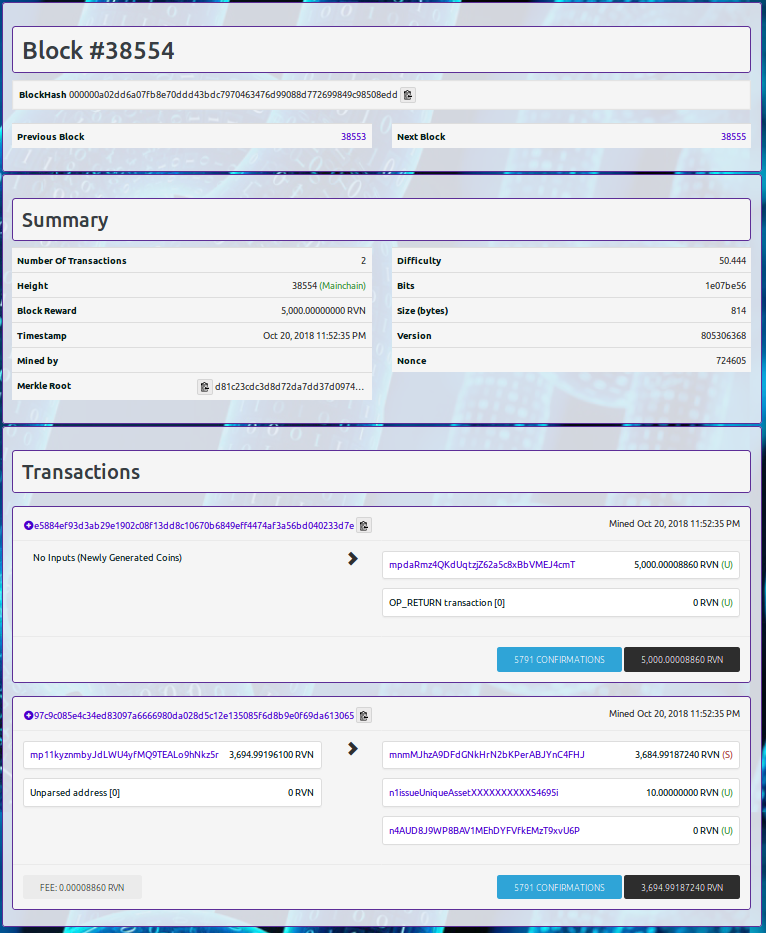
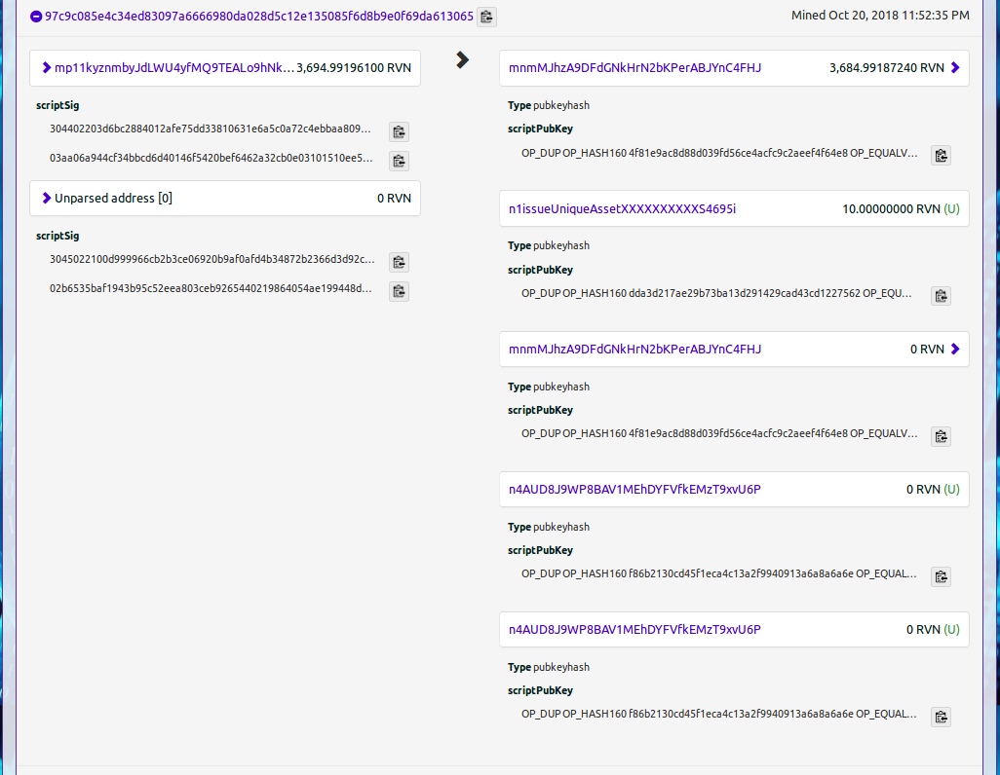

| Hans Schmidt : Oct 25th 2018 |
hans_schm1dt@protonmail.com |
What is wrong with Ravencoin testnet6 block 38554?
*Why did Blondfrogs instruct everyone to invalidateblock 38554 on Ravencoin testnet6? Why did the chain fork?*
*Why did Blondfrogs instruct everyone to invalidateblock 38554 on Ravencoin testnet6? Why did the chain fork?*
Background:
Two days ago (on 2018-10-23) Blondfrogs (the Ravencoin developer) instructed people using testnet6 that the testnet was no longer valid after the introduction of the new wallet 2.1.1. He instructed that it was necessary to do the following:
- From the console: "invalidateblock 000000a02dd6a07fb8e70ddd43bdc7970463476d99088d772699849c98508edd"
- Then shutdown the client and reindex with "./src/ravend -testnet -reindex"
A quick analysis of testnet6 block 38554
Looking at the block:
Go to: https://testnet.ravencoin.network/block/000000a02dd6a07fb8e70ddd43bdc7970463476d99088d772699849c98508edd
You should now be looking at the contents of testnet6 Block #38554. It should look like this:

You will notice that it contains just two transactions.
- A simple coinbase mining transaction yielding 5000 testnet6 RVN
- A more interesting which we will look at closer
"Another flaw in the human character is that everybody wants to build and nobody wants to do maintenance."
-Kurt Vonnegut
-Kurt Vonnegut

Clicking on the 2nd transaction (Transaction ID 97c9c085e4c34ed83097a6666980da028d5c12e135085f6d8b9e0f69da613065) we can see the details as follows:

So now we have the illegal transaction number and we can look closer.
I will not go into complete disassembly of the instruction here (I intend to publish a detailed article next week showing how to do this for all Ravencoin transactions). But I will show some of the dissassembly of the illegal portion here as an instructive example.
- There are 2 inputs:
- Input 0: The first input is the source of RVN funds to pay for creating assets
- address mp11kyznmbyJdLWU4yfMQ9TEALo9hNkz5r containing 3,694.99196100 RVN
- Input 1: The second input which appears somewhat mysterious
- this is the owner token which is required to provide the authority to create a subasset
- There are 5 outputs:
- Output 0: This is the RVN change back to the user (note that it is 10 RVN less than Input 0)
- Note the address mnmMJhzA9DFdGNkHrN2bKPerABJYnC4FHJ where the user will receive his RVN balance.
- Output 1: A transfer of 10 RVN to the address n1issueUniqueAssetXXXXXXXXXXS4695i
- A fairly strong hint! There are two unique assets being created.
- Output 3: Output 3 is the return of the owner token back to the user.
- Note that the address is the same as the address used for Output 0
- Output 4: This is a unique asset creation being sent to the address n4AUD8J9WP8BAV1MEhDYFVfkEMzT9xvU6P
- Output 5: This is another unique asset creation being sent to the same address
So now let's take a closer look at Outputs 4 and 5. We can click on the web page and copy the details here:
- Ouput 4: OP_DUP OP_HASH160 f86b2130cd45f1eca4c13a2f9940913a6a8a6a6e OP_EQUALVERIFY OP_CHECKSIG OP_RVN_ASSET 72766e710741434d4532233100e1f50500000000000000 OP_DROP
- Note the portion: 72766e710741434d4532233100e1f50500000000000000
- Output 5: OP_DUP OP_HASH160 f86b2130cd45f1eca4c13a2f9940913a6a8a6a6e OP_EQUALVERIFY OP_CHECKSIG OP_RVN_ASSET 72766e710741434d4532233100e1f50500000000000000 OP_DROP
- Note the portion: 72766e710741434d4532233100e1f50500000000000000
This is the portion of each output which actually creates the asset. It can the broken down as follows:
| 72766e | In ascii, this is "rvn", which is the standard Ravencoin asset header |
| 71 |
The "71" here is the Ravencoin asset opcode for asset creation |
| 07 |
This indicates that the length of the asset name is 7 bytes long |
| 41434d45322331 | These 7 bytes in ascii are "ACME2#1", which is the name the user chose for his new unique asset |
| 00e1f50500000000 | Qty: This is an 8-bytes little-endian qty = 1e8 satoshis = 1 asset, which is always the case for unique assets |
| 00 |
divisibility (units) is set to 0 |
| 00 |
reissuability is set to 0 |
| 00 |
has_ipfs is set to 0 = no |
So that makes sense. But both transaction outputs 4 and 5 have identical asset creation sections
But that should not be allowed! Two unique assets with the same name!
The smoking gun:
So there we have it! This is the Duplicate Unique ID bug which Scotty0448 discovered and which earned him a bug bounty.
Now go find some bugs of your own before October 31st !
Copyright 2018 by Hans Schmidt